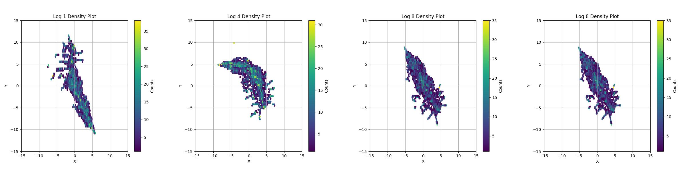
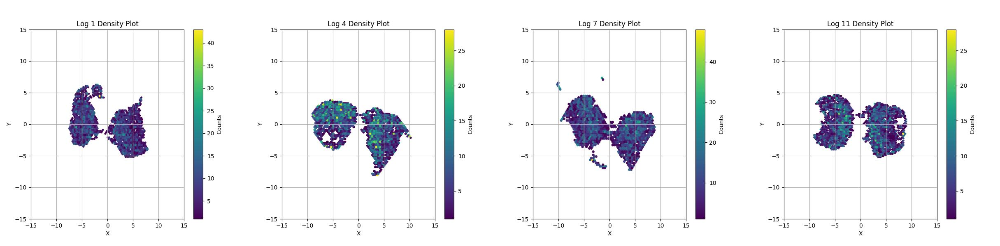
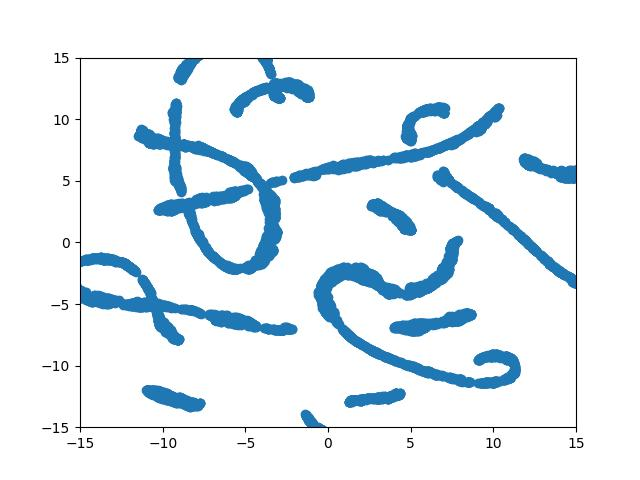
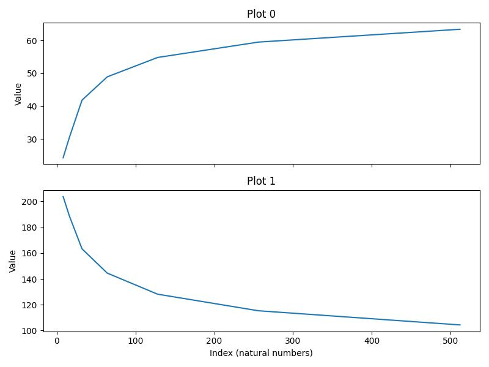
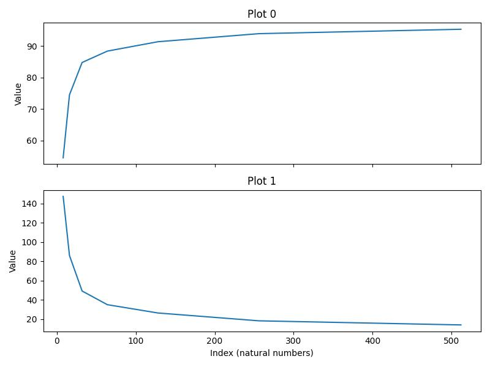

UROP1000 · Self-initiated Undergraduate Research · HKD 3,000 Stipend
Sufficient Dimension Predictor
for Vision Transformers
Training-free prediction of embedding dimension via initialization-time geometry
Aaron Branson Cigres Li · HKUST · Jan 2025 – Aug 2025
Motivation & Key Findings
Existing hyperparameter selection methods rely on search + statistical techniques with little use of model behavior. Can we predict the sufficient embedding dimension without any training?
1
Geometry is Preserved
Local structure of embeddings from Xavier initialization is mostly preserved during ViT training
2
Stability vs Collapse
Structure remains stable under sufficient dimensions but collapses under insufficient ones
3
Collapse Predicts Accuracy
Dimension where collapse begins strongly predicts sharp decreases in final accuracy
Finding 1: Initialization Geometry Persists Through Training
UMAP projections of token-level embeddings from initialization to 10 epochs of training

ViT trained on CIFAR — local structure of Xavier-initialized embeddings is largely preserved across training

ViT trained on MNIST — same preservation observed across a different dataset
Why Is Initialization Geometry Preserved?
- Xavier-initialized projection matrices preserve local distances
- Raw pixel distance between image patches is already semantically meaningful
- Therefore Xavier-initialized embeddings carry meaningful structure before any training
Verified numerically: Xavier projection of a 3D helix to 3D space preserves local curve structure after UMAP projection →

Xavier-projected 3D helix → UMAP: local structure preserved
Finding 2: Structure Collapses Under Insufficient Dimension
UMAP projections of Xavier-initialized matrix projections of CIFAR10 image patches
8-dim
16-dim
32-dim
64-dim
128-dim
256-dim
Representation collapses
due to insufficient dimension
⇒
Representation stabilizes
Finding 2: Same Pattern on MNIST
UMAP projections of Xavier-initialized matrix projections of MNIST image patches
8-dim
16-dim
32-dim
64-dim
128-dim
256-dim
Collapse threshold differs by dataset (MNIST: 32-dim, CIFAR10: 64-dim) reflecting data complexity
Finding 3: Collapse Predicts Accuracy Drop
Accuracy and loss vs embedding dimension after 50 epochs of training

CIFAR10 — accuracy plateaus around dim 64, matching the geometry collapse threshold

MNIST — accuracy plateaus around dim 32, matching the geometry collapse threshold
The dimension where initialization-time geometry begins to collapse strongly predicts the point where accuracy sharply decreases — enabling training-free prediction of sufficient embedding dimension
Discussion & Summary
Limitation
Difficult to quantify geometry collapse — UMAP projections have inconsistent rotations and scale differences. A robust, rotation and scale invariant metric is needed to automate collapse detection.
Key Contributions
- Showed Xavier initialization geometry persists through training across ViT and CaiT architectures
- Identified dimension-dependent collapse in initialization-time embeddings
- Demonstrated collapse threshold predicts sufficient embedding dimension without any training